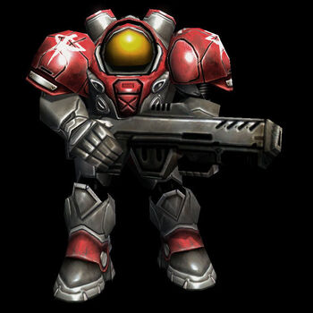
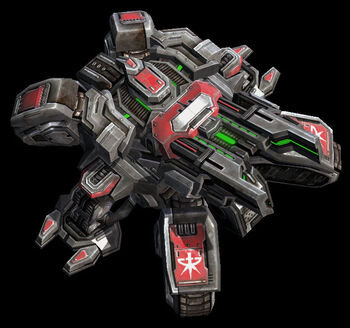
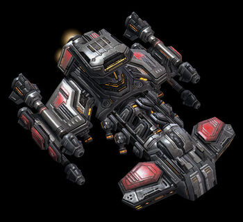

Image |
Description |
Cost |
Link |
Add To Cart |
|  | The marine is the basic infantry unit of terran forces. |
50 Minerals |
Link | |
|  | The siege tank provides the terrans with a marriage between armored infantry support and mobile, long range firepower. |
150 Minerals125 Vespene |
Link | |
|  | The battlecruiser is the toughest terran aerial unit. |
400 Minerals300 Vespene |
Link |